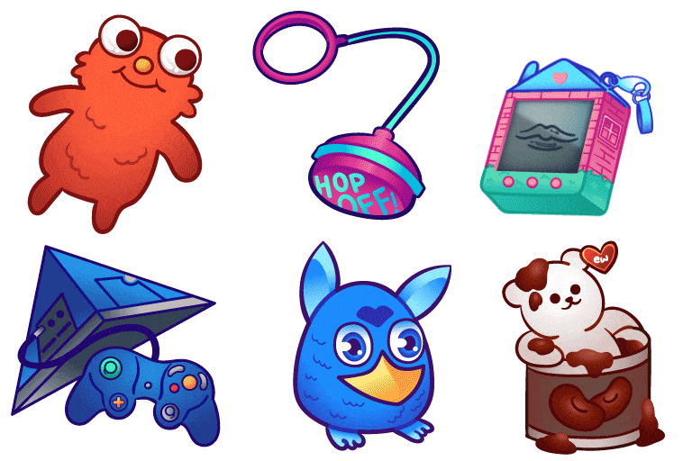
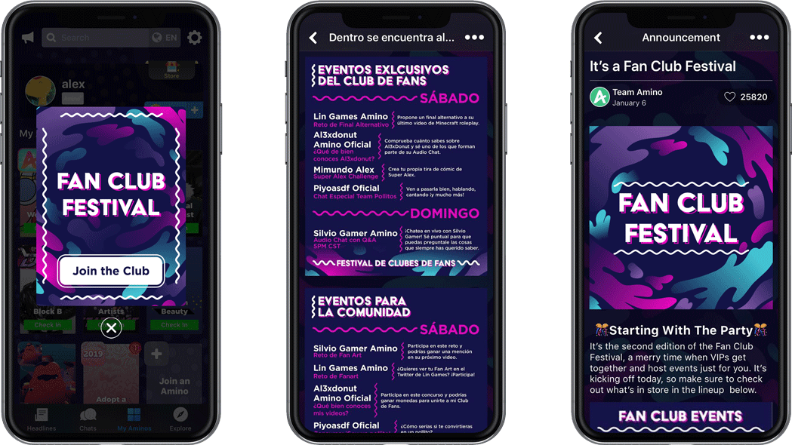

Amino was a social media app where users from around the world could share their passions, discover new interests, and find community. Working on the Brand team, my responsiblities included making ad creative, illustrating digital goods, designing marketing templates, and supporting the Growth and Strategy teams.
I designed profile frames, chat bubbles, and stickers users could purchase and use in the app.

I was responsible for designing and animating ad creative templates for a variety of media placements.
